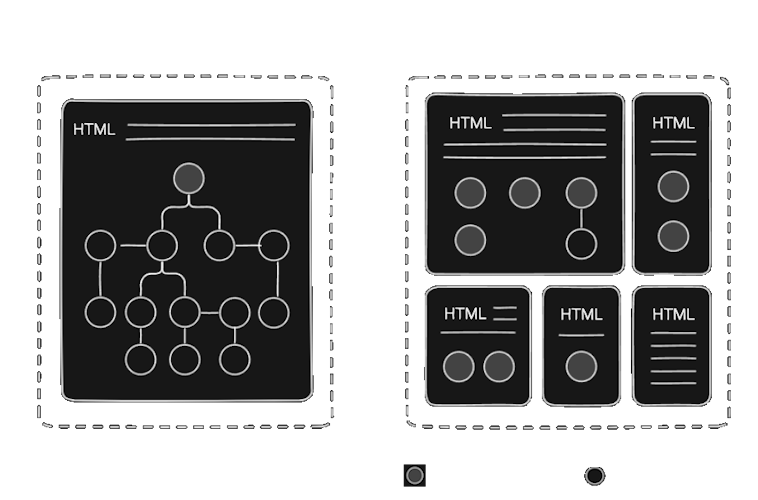

micro-components ● declarativeness ● full-stack components ● self-render ● function decorators ● property mixins ● hookless
With JiH (JSX-in-HTML), the Single-Page Application with a monolith component tree is changed by a new architecture using small component trees multiple routed pages and more performatic static HTML. The concept is is just split pages and component between HTML and JSX, allowing plain pages and letting components just to focus on reuse, binding and dynamicity.
const DeclarativeDrivenDesign = props => <h1>cleaner component</h1>
Declarative-driven design is a design principle that is promoted by reactive framework, preventing imperative code inside component and keeping component fully declarative, like an stateless component.
This approach, in addition to making the code more readable and cleaner, also improves modularity and performance, by keeping functions and algorithms outside the component's rendering cycle.
The main feature for this approach is the prevention of the use of hooks in functional components, that is the main reaso that brings over-coding inside components, and brings some performance issues that need be handle by hooks like useCallback.
Hookless design is a functional coomponent approach that prevents any hook usage, based the innovative concepts delivered by reactive.
useState |
binding redesign with starteful props and context states |
useEffect |
context states and stateful props handle useEffects |
useLayoutEffect |
HTML-first approach solves HTML handling |
useCallback |
declarative-driven design prevents in-component functions |
useReducer |
context states has an easier and leaner SRS+OOP approach |
useMemo |
modular functions easily handles memoized data |
useRef |
reactive forms is a simpler alternative to it |
useImperativeHandle |
related to useRef |
Self-rendering states (or SRS) are useState + useEffet within a Proxy object that renders when its fields changes, based only those rules:
it not support destructuring, in this case it will acts as a simple values or sub-objects withot self-rendering behavior;
delayed render algorithm batches all the required rendering during 0.5s, this avoid multiple rendering within multiples changes, in same time, this delay can not be perceived by human brain;
the render is only really triggered where the SRS field is reading, and is turns off whe the first re-render is executed, to avoid rendering cascade in component tree.
changing SRS field v reading SRS field
<component {srs.x=1}> ---> renders ---> <component {=srs.x}>
Function decorators is a feature not supported yet by any version of EcmaScript. The proposal is slightly different from others decorators.
function log(text: string) {
return function(call: Function, args: any[], name: string) {
console.log(text, { name, args, call })
return call(args)
}
}
Function decorators supports also arrow functions, as below:
@log('adds function details')
function adds(x, y) { return x + y }
@log('times function details')
const times = (x, y) => x * y
Those functions are transpiled to this.
function adds(x,y){ return log(function(x, y) { return x + y }, [x,y], "adds") }
const times = (x,y) => log((x, y) => x * y, [x,y], "times")
Property mixins or property directives are custom property injections that is very similar to Angular attribute directive, it an way to append new feature to an existing element by custom props, avoiding extra componentization.
The technical feature details is explain in props render section, but conceptual terms, this feature promotes more reusability by mixing extension, more readability, since the could keep low-level, reusing semantic web. It also has some performatic gains, since there is less component to render.
const App => <div invert>Inverter colors</div>
In above example, we have a property injection 'invert' that could be implemented has bellow.
function invert(props) {
const inProps = Object.keys(props).includes('invert')
const isInvert = props.invert !== false && inProps
const fitler = `invert(${ isInvert ? 1 : 0 })`
return { ...props, { ...props.style, filter } }
}
Many of the reactive.js feature are property mixins (routing, styling, binding, etc) since it is very effective to reduce boilerplate code and improve code clarity. The JSX component is preserved only to use case when it is really needed, keeping the project leaner and more maintenable.
Anyway, it is not a mandatory use, its main purpose is to turn possible all props-injection feature of reactive framework, but the framework itself offers this new thing in its toolbox in React development.
Full-stack components enable server-components and client-component without any extra information, as "use client" or "use server" within next.hs, enabled by function serialization and hookless designing.